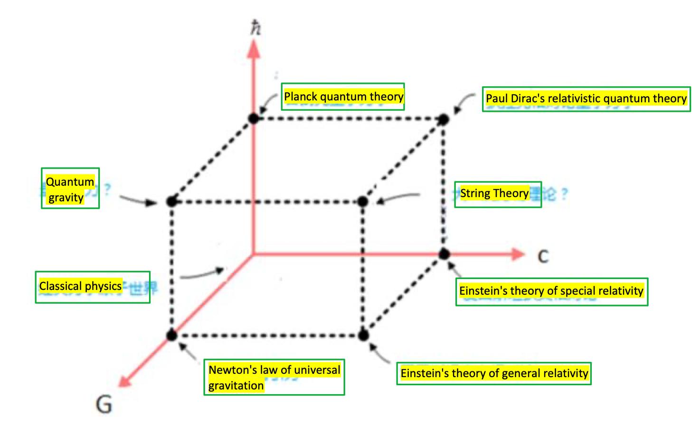
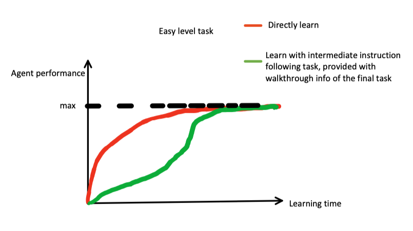
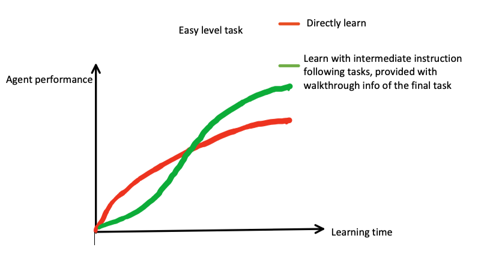
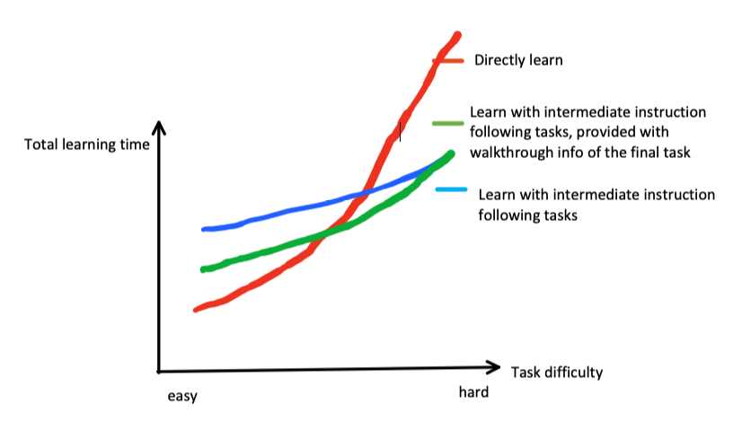

This page is not completed yet
You need password to access to the content, go to Slack *#phdsukai to find more.
Part of this article is encrypted with password:
[TOC]
Motivation of the research#
We may lack a solid justification why bother developing the natural language understanding ability for learning-based agent when the agent can eventually find its way solving tasks by a large amount of training steps. Moreover, although people are saying that natural language understanding ability helps agents to increase sample efficiency and generalisation ability, we lack a systematic experiment to demonstrate that. Therefore I think it is worth investigating how natural language understanding ability really influences the learning process of agent.
Inspiration from how people learn physics#
Claim: All of the incoming discussions are only applicable for agents which use neural network to construct their policy module (brain) and all the of the incoming discussions only make sense if we believe that the weights of the neural network somehow represent the “intelligence” of agents.
The following figure shows the relationship of various physics theories

Ok, it is clearly known that people learn classical physics before they learn the modern physics theories that are more accurate to explain the physical phenomena in the universe.
Why not directly learn modern physics? The reason is straightforward: modern physics is complex and difficult to be understood. People will experience a steep learning curve and in the end they may spend a large amount of time and still fail to understand the modern physics theories. In contrast, people can build a foundation of knowledge by learning the classical physics, and “by standing upon the shoulders of classical physics”, we can understand the modern physics more easily.
So, what is the take-away lesson
- when learning something difficult, it might be more (time) efficient to learn several simpler but related things first so as to build some foundations, before learning the difficult one.
This is equivalent to the following statement:
- when learning to solve a difficult task, it might be more (time) efficient to ask the learning based agent to learn to solve simpler tasks as the intermediate step to build a foundation of related knowledge before learning to solve the difficult task.
So, here is the research title: “using instruction following as a intermediate training step towards a general learning-based agent” so we want to ask the learning based agent to learn to solve instruction following tasks as the intermediate step to build a foundation of related knowledge general intelligence (since it is natural language understanding) before learning to solve the difficult task.
Experiment setting#
Given a shared environment, we will examine on three learning styles
- directly learn the problem solving task through the interaction of the environment
- learn some simple instruction following tasks in the same environment, after that, learn to solve the target task through the interaction with the environment provided with the associated walkthrough info
- learn some simple instruction following tasks in the same environment, after that, learn to solve the target task through the interaction without any auxiliary instruction info.
So, the result of this experiment should visualise the relationships of the following dimension:
- task difficulty
- total learning time
- agent performance
- learning style
If the AI agent learning is similar to human learning, then we expected to see the following diagram
| Figure No | Figure |
|---|---|
| 1 |  |
| 2 |  |
| 3 |  |
-
Well, in fact, the green line may just indicates that agents who can comprehend the language walkthrough info is able to solve difficult tasks because the difficult task become easy if we provide walkthrough and all the intermediate learning steps are the prerequisite for agent to comprehend the walkthrough.
-
What would be a surprise is the blue line in Figure 3, it means that the intermediate instruction following tasks indeed helps to form a foundation of general intelligence which will help the agent to solve difficult task. (the paper can wikipeida help offline reinforcement learning may imply this)
-
If that’s the case (the blue line), it is also worth conducting experiments on how the quality of instruction following task would affect the final performance. Can the agent even learn solve the final task more quickly by having intermediate instruction following tasks with bad instructions (bad means that the behaviour is toxic to the final task, e.g., ask the agent to jump into a snake), I expect that if we ensure the diversity of the instruction following task, intermediate instruction following tasks with bad instruction (bad for the final task) will also be helpful.
-
I also tried to explain why agent can utilise toxic demonstration in HER section 3.3 using the concept of compositionality, which is much clearer than the term “general intelligence”, which is the following:
- toxic demonstrations can be utilised by understanding the compositionality of the task with the help of natural language descriptions. For example, we have a toxic demonstration about an agent who jumped into a snake and died. This demonstration can then be decomposed in two dimensions – 1). objects “snake” and 2). action “jump into”. The agent turns out to learn two neutral knowledge through the decomposition process. After extensive training, we provide the agent with the correct instruction ”you should jump over a snake” and the agent is expected to composite knowledge of “snake” and knowledge of “jump over” together to form a desirable action plan.
-
So the following statements are equivalent:
- Natural language understanding ability helps learning based agent in decision-making process
- The learning process of solving instruction following tasks help to build a foundation of general intelligence which will help agent to solve the difficult task.
- The learning process of solving instruction following tasks helps the agent to understand the compositionality of complex tasks and thus decompose the complex task into familiar subtasks.